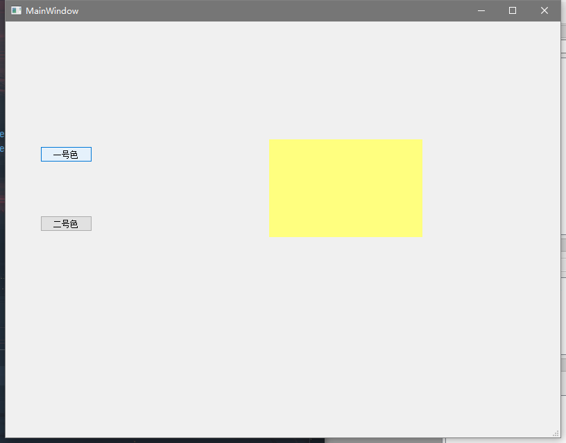
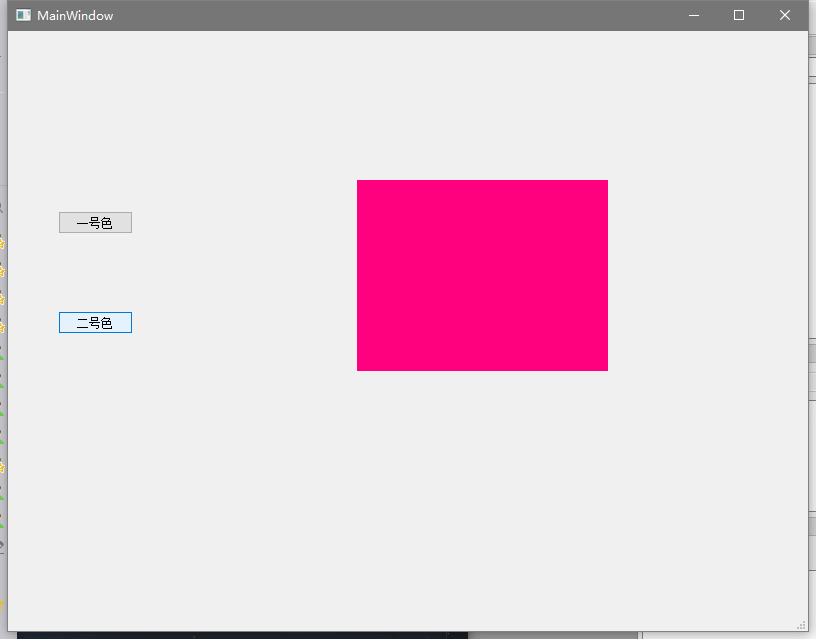

使用designer设计
使用QstackerWidget 进行多界面切换
在stackedWidget对象中插入页，即可实现多页面。
将控件放入指定对应页面。

Ui代码
1
2
3
4
5
6
7
8
9
10
11
12
13
14
15
16
17
18
19
20
21
22
23
24
25
26
27
28
29
30
31
32
33
34
35
36
37
38
39
40
41
42
43
44
45
46
47
48
49
50
51
52
53
| from PyQt5 import QtCore, QtGui, QtWidgets
class Ui_MainWindow(object):
def setupUi(self, MainWindow):
MainWindow.setObjectName("MainWindow")
MainWindow.resize(800, 600)
self.centralwidget = QtWidgets.QWidget(MainWindow)
self.centralwidget.setObjectName("centralwidget")
self.B1 = QtWidgets.QPushButton(self.centralwidget)
self.B1.setGeometry(QtCore.QRect(50, 180, 75, 23))
self.B1.setObjectName("B1")
self.B2 = QtWidgets.QPushButton(self.centralwidget)
self.B2.setGeometry(QtCore.QRect(50, 280, 75, 23))
self.B2.setObjectName("B2")
self.stackedWidget = QtWidgets.QStackedWidget(self.centralwidget)
self.stackedWidget.setGeometry(QtCore.QRect(200, 60, 551, 421))
self.stackedWidget.setObjectName("stackedWidget")
self.page1 = QtWidgets.QWidget()
self.page1.setObjectName("page1")
self.frame1 = QtWidgets.QFrame(self.page1)
self.frame1.setGeometry(QtCore.QRect(180, 110, 221, 141))
self.frame1.setStyleSheet("background-color: rgb(255, 255, 127);")
self.frame1.setFrameShape(QtWidgets.QFrame.StyledPanel)
self.frame1.setFrameShadow(QtWidgets.QFrame.Raised)
self.frame1.setObjectName("frame1")
self.stackedWidget.addWidget(self.page1)
self.page2 = QtWidgets.QWidget()
self.page2.setObjectName("page2")
self.frame2 = QtWidgets.QFrame(self.page2)
self.frame2.setGeometry(QtCore.QRect(149, 89, 251, 191))
self.frame2.setStyleSheet("background-color: rgb(255, 0, 127);")
self.frame2.setFrameShape(QtWidgets.QFrame.StyledPanel)
self.frame2.setFrameShadow(QtWidgets.QFrame.Raised)
self.frame2.setObjectName("frame2")
self.stackedWidget.addWidget(self.page2)
MainWindow.setCentralWidget(self.centralwidget)
self.menubar = QtWidgets.QMenuBar(MainWindow)
self.menubar.setGeometry(QtCore.QRect(0, 0, 800, 23))
self.menubar.setObjectName("menubar")
MainWindow.setMenuBar(self.menubar)
self.statusbar = QtWidgets.QStatusBar(MainWindow)
self.statusbar.setObjectName("statusbar")
MainWindow.setStatusBar(self.statusbar)
self.retranslateUi(MainWindow)
QtCore.QMetaObject.connectSlotsByName(MainWindow)
def retranslateUi(self, MainWindow):
_translate = QtCore.QCoreApplication.translate
MainWindow.setWindowTitle(_translate("MainWindow", "MainWindow"))
self.B1.setText(_translate("MainWindow", "一号色"))
self.B2.setText(_translate("MainWindow", "二号色"))
|
控制代码
button按钮绑定对应事件进行页面展示。
1
2
3
4
5
6
7
8
9
10
11
12
13
14
15
16
17
18
19
| import sys
from PyQt5.QtWidgets import QApplication, QMainWindow
from win import Ui_MainWindow
class MainWin(QMainWindow, Ui_MainWindow):
def __init__(self, parent=None):
super(MainWin, self).__init__(parent)
self.setupUi(self)
self.B1.clicked.connect(lambda: self.stackedWidget.setCurrentIndex(0))
self.B2.clicked.connect(lambda: self.stackedWidget.setCurrentIndex(1))
if __name__ == '__main__':
app = QApplication(sys.argv)
win = MainWin()
win.show()
sys.exit(app.exec_())
|
效果图




{kind=link}
{kind=link}